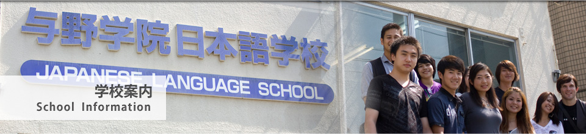
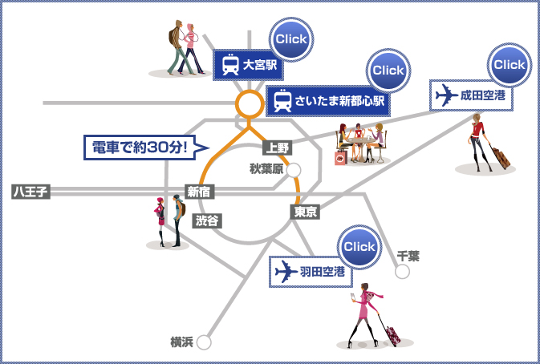
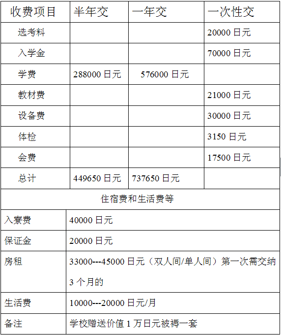
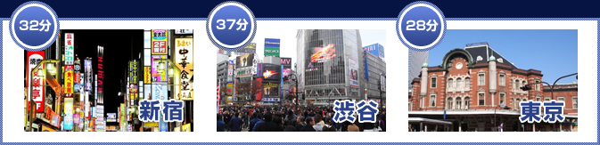

1. The school cooperates with a dispatch agency, with a contract that guarantees 100% part-time work, making it the top choice for salaried workers. 2. A set of Japanese-style bedding is provided, and since you can only bring 40 kilograms at random, the saved amount can be used for other daily necessities. 3. Dormitory accommodation is cheap. Also, the dormitory manager is a Chinese woman, very gentle, clean, and convenient. When you first arrive in Japan, she will bring school...

1. The school cooperates with a dispatch agency, offering 100% part-time work arrangements for working professionals, making it the top choice for salaried workers.
2. A set of Japanese-style bedding is provided, as luggage is limited to 40 kg, so the saved weight can be used to bring other daily necessities.
3. Dormitory accommodation is cheap. Moreover, the dormitory managers are Chinese women, who are especially gentle, clean, and convenient. When you first arrive in Japan, she will take students to handle necessary procedures and buy daily necessities. Life abroad will start very smoothly.
4. Can participate in university entrance foreign language and culture course tutoring, particularly cheap, with lectures from top school teachers via video.
5. Free one-on-one tutoring for graduate school admissions
6. The Tokyo metropolitan area has more jobs and more opportunities, but the consumption is not as high as in Tokyo.
7. Hold a public college degree or above; passing Japanese N4 or J-test F level or GNK quasi-intermediate allows you to pay tuition for half a year. (Except for private schools, adult education, and self-study exams)
8. High school graduation with a score above 400 in the college entrance exam, passing Japanese N4 or J-test F level, or GNK pre-intermediate level, allows tuition to be paid for half a year. (Regular public high school students)
9. Students who pass N 2 in vocational high schools, technical schools, and secondary vocational schools can pay tuition for half a year.
(Those who pay half a year's tuition cannot transfer to another school or continue their studies after half a year. They must continue attending for at least one year. )
10. All materials are in Chinese Simplified; we handle translation
11. For regular undergraduate science students, if you pass the interview after reaching Level 1 Japanese, you can transfer directly to the job.
12 Life Teacher is a young Japanese person with good Chinese and easy communication
13 For those who want to attend vocational schools, we offer direct admission to vocational schools with majors such as anime, automotive, tourism, hotel, and nursing. After graduation, we recommend jobs and take full responsibility
14. Collaborate with a specialized school. After graduating from this specialized school, you are guaranteed employment at an IT company.
Or you can work at a restaurant, with the chance to start as an assistant manager.
15. There is a "designated school recommendation" service, allowing admission to the Graduate School of Economics.

Settle tuition fees with the Wild College


1、学校和派遣会社合作，有合同100%安排打工，工薪族首选学校。
2、赠送日式被褥一套，因为随机只能带40公斤，省下来的分量可以带其他的生活必需品。
3、宿舍住宿便宜。而且宿舍管理员为中国女性，特别温柔，又清洁又方便。刚到日本,她会带学生去办所需手续及买生活必需品。留学生活开始的时候就会非常顺利。
4、可以参加大学升学外语文化课辅导，特别便宜，用视频名校老师的讲课辅导。
5、大学院升学一对一免费辅导
6、东京圈，工作多，机会多，但是却没有东京那么高的消费。
7、公立大专以上学历，日语N4或J-test F级或GNK准中级通过可以半年交学费。(除了民办,成人教育,自考考试)
8、高中毕业高考400分以上，日语N4或J-test F级或GNK准中级通过可以半年交学费。(普通公立高中学生)
9、职高、技校、中专学生N2通过者可以半年交学费。
(交半年学费者不能半年之后走其他学校或者升学。至少继续上1年以上。)
10、所有材料简体中文即可，我们负责翻译
11、统招本科理科生，日语一级后如果用人单位面试成功，可以直接转就职。
12 生活老师是日本的年轻人，汉语好，沟通容易
13 想上专门学校的同学，我们有可直升的专门学校，有动漫、汽车、旅游、酒店、护士等专业，毕业后推荐就职，负责到底
14 和一所专门学校合作。毕业这专门学校之后保证进入在一所IT公司就业。
或者在一家料理店就业,也有机会一开始可以当副店长。
15 有”指定校推荐”服务，可以进入经济系大学院。
与 野 学 院 学 费 清 单
English edition. Select 中文原文 to compare with the original Chinese article.
This article is edited and published by Liaoning Overseas Study Service Co., Ltd. The content is for study abroad planning reference only. Unauthorized reproduction is prohibited.
Information on policies, regulations, admissions brochures, and program fees is timely. Please refer to the latest releases from official institutions and institutions in various countries; For detailed verification, please Contact an advisor。